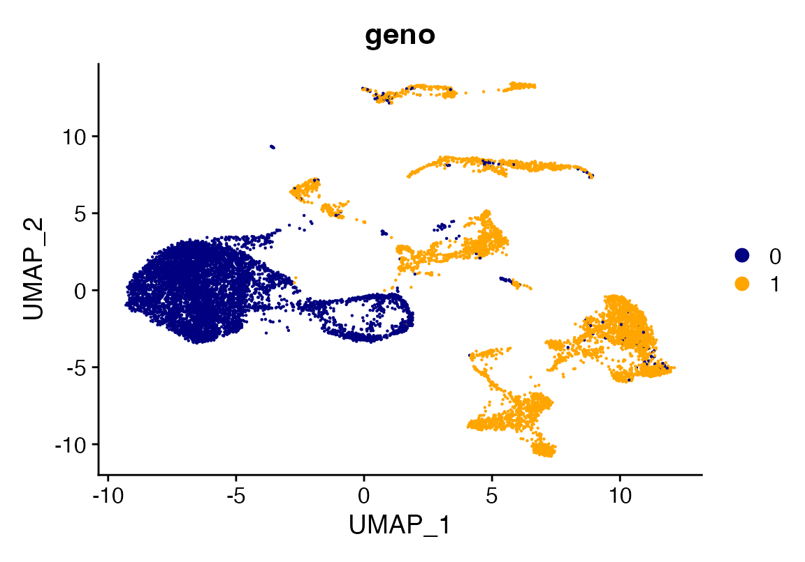
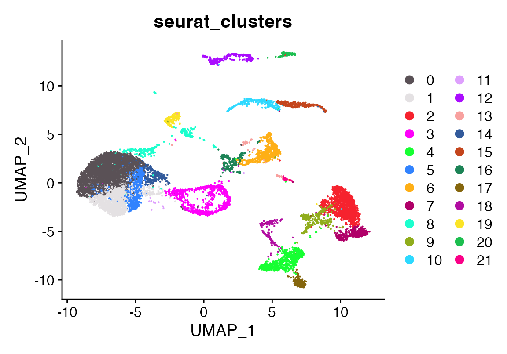
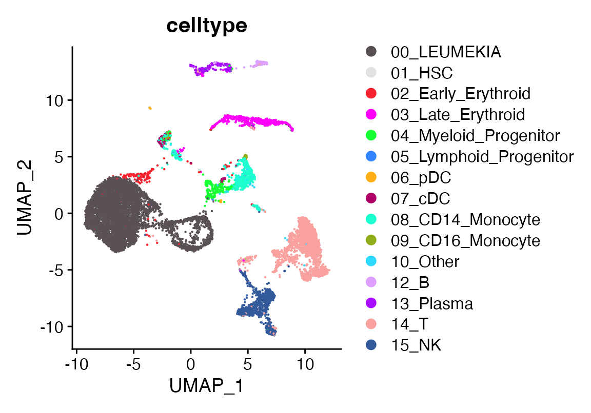
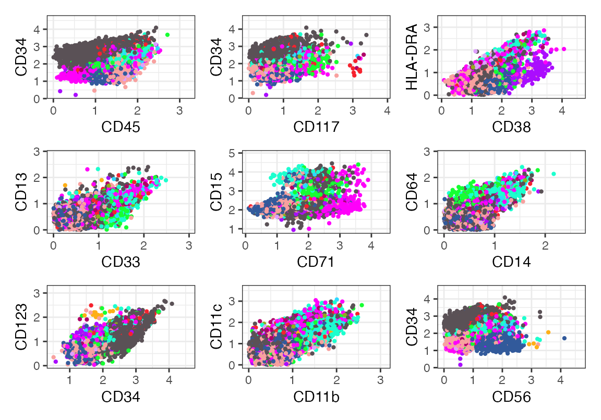
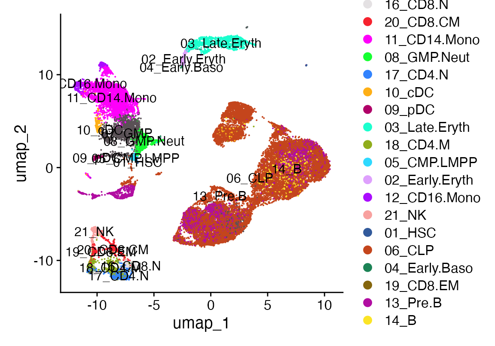
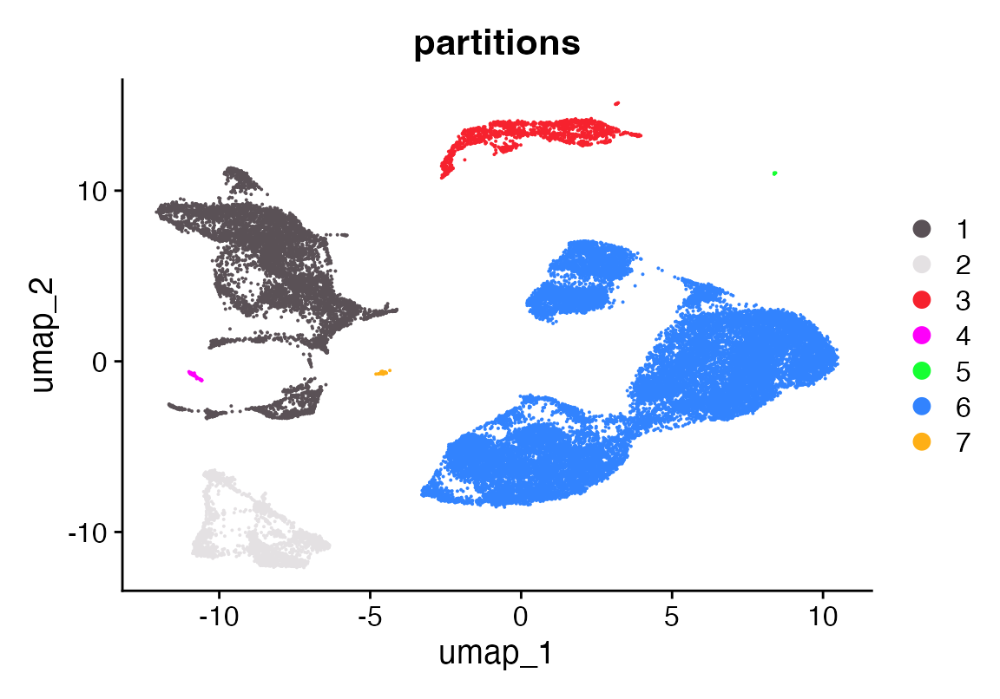
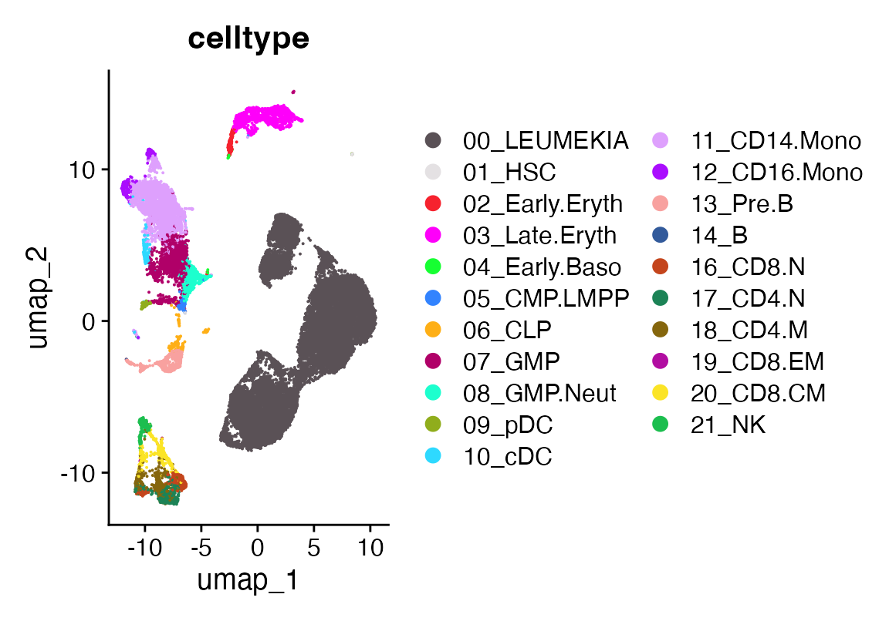
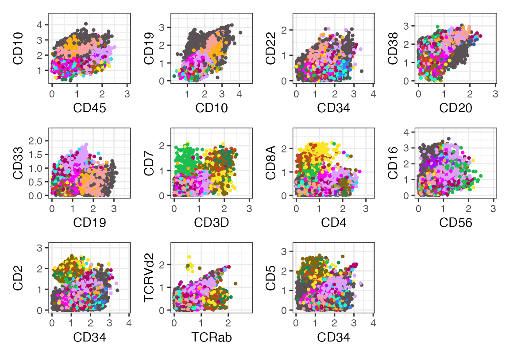

How to make flow style plots
2024-10-18
LeukemiaFlowPlots.RmdInstalling flscuts
First, ensure you have the devtools R package installed,
which allows you to install packages from GitHub. If
devtools is installed, you can easily install using the
following command:
devtools::install_github("furlan-lab/flscuts")Loading data
In this section, we’ll load two Seurat objects, fix the celltypes so they harmonize, and create some colors.
# Load required packages
suppressPackageStartupMessages({
library(flscuts)
library(Seurat)
library(viewmastR)
library(ggplot2)
library(scCustomize)
})Load AML dataset and define the leukemia
seu <- readRDS(file.path(ROOT_DIR1, "220831_NB1.RDS"))
DimPlot_scCustom(seu, group.by = "geno")
DimPlot_scCustom(seu, group.by = "seurat_clusters")
seu$celltype <-as.character(seu$celltype)
seu$celltype[seu$seurat_clusters %in% c(0,1,5,3,14)]<- "00_LEUMEKIA"
DimPlot_scCustom(seu, group.by = "celltype")
DefaultAssay(seu)<-"ADT"
cts <- seu@assays$ADT@counts
rownames(cts) <- gsub("\\.1", "", rownames(cts))
rownames(cts)[140] <- "CD15"
seu$ADT <- CreateAssayObject(cts)
seu<-NormalizeData(seu, normalization.method = "CLR")
seu$adt_sum <- colSums(seu@assays$ADT$counts)
seu$log_adt_sum <- log10(seu$adt_sum)
aml_panel(seu, color = "celltype", cols = as.character(pals::polychrome(15)))
Load ALL dataset and define the leukemia
seu <- readRDS(file.path(ROOT_DIR2, "KMGall"))
DimPlot_scCustom(seu)
DimPlot_scCustom(seu, group.by = "partitions")
seu$celltype <- seu$vmR_pred
seu$celltype[seu$partitions %in% 6]<- "00_LEUMEKIA"
DimPlot_scCustom(seu, group.by = "celltype")
DefaultAssay(seu)<-"ADT"
cts <- seu@assays$ADT@counts
rownames(cts) <- gsub("\\.1", "", rownames(cts))
seu$ADT <- CreateAssayObject(cts)
seu<-NormalizeData(seu, normalization.method = "CLR")
seu$adt_sum <- colSums(seu@assays$ADT$counts)
seu$log_adt_sum <- log10(seu$adt_sum)
all_panel(seu, color = "celltype", cols = as.character(pals::polychrome(21)))
Appendix
## R version 4.3.1 (2023-06-16)
## Platform: x86_64-apple-darwin20 (64-bit)
## Running under: macOS Sonoma 14.6.1
##
## Matrix products: default
## BLAS: /Library/Frameworks/R.framework/Versions/4.3-x86_64/Resources/lib/libRblas.0.dylib
## LAPACK: /Library/Frameworks/R.framework/Versions/4.3-x86_64/Resources/lib/libRlapack.dylib; LAPACK version 3.11.0
##
## locale:
## [1] en_US.UTF-8/en_US.UTF-8/en_US.UTF-8/C/en_US.UTF-8/en_US.UTF-8
##
## time zone: America/Los_Angeles
## tzcode source: internal
##
## attached base packages:
## [1] stats graphics grDevices utils datasets methods base
##
## other attached packages:
## [1] scCustomize_2.1.2 ggplot2_3.5.0 viewmastR_0.2.3 Seurat_5.0.3
## [5] SeuratObject_5.0.1 sp_2.1-3 flscuts_0.1.1
##
## loaded via a namespace (and not attached):
## [1] fs_1.6.3 matrixStats_1.2.0
## [3] spatstat.sparse_3.0-3 bitops_1.0-7
## [5] lubridate_1.9.3 RcppMsgPack_0.2.3
## [7] httr_1.4.7 RColorBrewer_1.1-3
## [9] doParallel_1.0.17 backports_1.4.1
## [11] tools_4.3.1 sctransform_0.4.1
## [13] utf8_1.2.4 R6_2.5.1
## [15] lazyeval_0.2.2 uwot_0.1.16
## [17] GetoptLong_1.0.5 withr_3.0.0
## [19] gridExtra_2.3 progressr_0.14.0
## [21] cli_3.6.2 Biobase_2.60.0
## [23] textshaping_0.3.7 spatstat.explore_3.2-6
## [25] fastDummies_1.7.3 prismatic_1.1.1
## [27] labeling_0.4.3 sass_0.4.9
## [29] spatstat.data_3.0-4 ggridges_0.5.6
## [31] pbapply_1.7-2 pkgdown_2.0.7
## [33] systemfonts_1.0.6 foreign_0.8-86
## [35] R.utils_2.12.3 dichromat_2.0-0.1
## [37] parallelly_1.37.1 maps_3.4.2
## [39] limma_3.56.2 pals_1.8
## [41] rstudioapi_0.15.0 generics_0.1.3
## [43] shape_1.4.6.1 gtools_3.9.5
## [45] ica_1.0-3 spatstat.random_3.2-3
## [47] dplyr_1.1.4 Matrix_1.6-5
## [49] ggbeeswarm_0.7.2 fansi_1.0.6
## [51] S4Vectors_0.38.2 abind_1.4-5
## [53] R.methodsS3_1.8.2 lifecycle_1.0.4
## [55] yaml_2.3.8 edgeR_3.42.4
## [57] snakecase_0.11.1 SummarizedExperiment_1.30.2
## [59] recipes_1.0.10 Rtsne_0.17
## [61] paletteer_1.6.0 grid_4.3.1
## [63] promises_1.2.1 crayon_1.5.2
## [65] miniUI_0.1.1.1 lattice_0.22-5
## [67] beachmat_2.16.0 cowplot_1.1.3
## [69] mapproj_1.2.11 pillar_1.9.0
## [71] knitr_1.45 ComplexHeatmap_2.16.0
## [73] GenomicRanges_1.52.1 rjson_0.2.21
## [75] boot_1.3-28.1 future.apply_1.11.1
## [77] codetools_0.2-19 leiden_0.4.3.1
## [79] glue_1.7.0 data.table_1.15.2
## [81] vctrs_0.6.5 png_0.1-8
## [83] spam_2.10-0 gtable_0.3.4
## [85] rematch2_2.1.2 assertthat_0.2.1
## [87] cachem_1.0.8 gower_1.0.1
## [89] xfun_0.42 prodlim_2023.08.28
## [91] S4Arrays_1.2.0 mime_0.12
## [93] tidygraph_1.3.1 survival_3.5-7
## [95] timeDate_4032.109 SingleCellExperiment_1.22.0
## [97] pbmcapply_1.5.1 iterators_1.0.14
## [99] hardhat_1.3.1 lava_1.8.0
## [101] ellipsis_0.3.2 fitdistrplus_1.1-11
## [103] ipred_0.9-14 ROCR_1.0-11
## [105] nlme_3.1-164 bit64_4.0.5
## [107] RcppAnnoy_0.0.22 GenomeInfoDb_1.41.1
## [109] bslib_0.6.1 irlba_2.3.5.1
## [111] rpart_4.1.23 vipor_0.4.7
## [113] KernSmooth_2.23-22 colorspace_2.1-0
## [115] BiocGenerics_0.46.0 Hmisc_5.1-2
## [117] nnet_7.3-19 ggrastr_1.0.2
## [119] tidyselect_1.2.1 bit_4.0.5
## [121] compiler_4.3.1 htmlTable_2.4.2
## [123] BiocNeighbors_1.18.0 hdf5r_1.3.11
## [125] desc_1.4.3 DelayedArray_0.26.7
## [127] plotly_4.10.4 checkmate_2.3.1
## [129] scales_1.3.0 lmtest_0.9-40
## [131] stringr_1.5.1 digest_0.6.35
## [133] goftest_1.2-3 spatstat.utils_3.1-0
## [135] minqa_1.2.6 rmarkdown_2.26
## [137] XVector_0.40.0 htmltools_0.5.7
## [139] pkgconfig_2.0.3 base64enc_0.1-3
## [141] lme4_1.1-35.1 sparseMatrixStats_1.12.2
## [143] MatrixGenerics_1.12.3 highr_0.10
## [145] fastmap_1.1.1 rlang_1.1.3
## [147] GlobalOptions_0.1.2 htmlwidgets_1.6.4
## [149] UCSC.utils_1.1.0 shiny_1.8.0
## [151] DelayedMatrixStats_1.22.6 farver_2.1.1
## [153] jquerylib_0.1.4 zoo_1.8-12
## [155] jsonlite_1.8.8 BiocParallel_1.34.2
## [157] ModelMetrics_1.2.2.2 R.oo_1.26.0
## [159] BiocSingular_1.16.0 RCurl_1.98-1.14
## [161] magrittr_2.0.3 Formula_1.2-5
## [163] GenomeInfoDbData_1.2.10 dotCall64_1.1-1
## [165] patchwork_1.2.0 munsell_0.5.0
## [167] Rcpp_1.0.12 viridis_0.6.5
## [169] reticulate_1.35.0 pROC_1.18.5
## [171] stringi_1.8.3 miloR_1.8.1
## [173] ggraph_2.2.1 zlibbioc_1.46.0
## [175] MASS_7.3-60.0.1 plyr_1.8.9
## [177] parallel_4.3.1 listenv_0.9.1
## [179] ggrepel_0.9.5 forcats_1.0.0
## [181] deldir_2.0-4 graphlayouts_1.1.0
## [183] splines_4.3.1 tensor_1.5
## [185] circlize_0.4.16 locfit_1.5-9.8
## [187] igraph_2.0.3 spatstat.geom_3.2-9
## [189] RcppHNSW_0.6.0 reshape2_1.4.4
## [191] stats4_4.3.1 ScaledMatrix_1.8.1
## [193] evaluate_0.23 ggprism_1.0.4
## [195] nloptr_2.0.3 foreach_1.5.2
## [197] tweenr_2.0.3 httpuv_1.6.14
## [199] RANN_2.6.1 tidyr_1.3.1
## [201] purrr_1.0.2 polyclip_1.10-6
## [203] future_1.33.1 clue_0.3-65
## [205] scattermore_1.2 ggforce_0.4.2
## [207] janitor_2.2.0 rsvd_1.0.5
## [209] xtable_1.8-4 monocle3_1.4.3
## [211] RSpectra_0.16-1 later_1.3.2
## [213] class_7.3-22 viridisLite_0.4.2
## [215] ragg_1.3.0 tibble_3.2.1
## [217] memoise_2.0.1 beeswarm_0.4.0
## [219] IRanges_2.34.1 cluster_2.1.6
## [221] timechange_0.3.0 globals_0.16.3
## [223] caret_6.0-94
getwd()## [1] "/Users/sfurlan/develop/flscuts/vignettes"